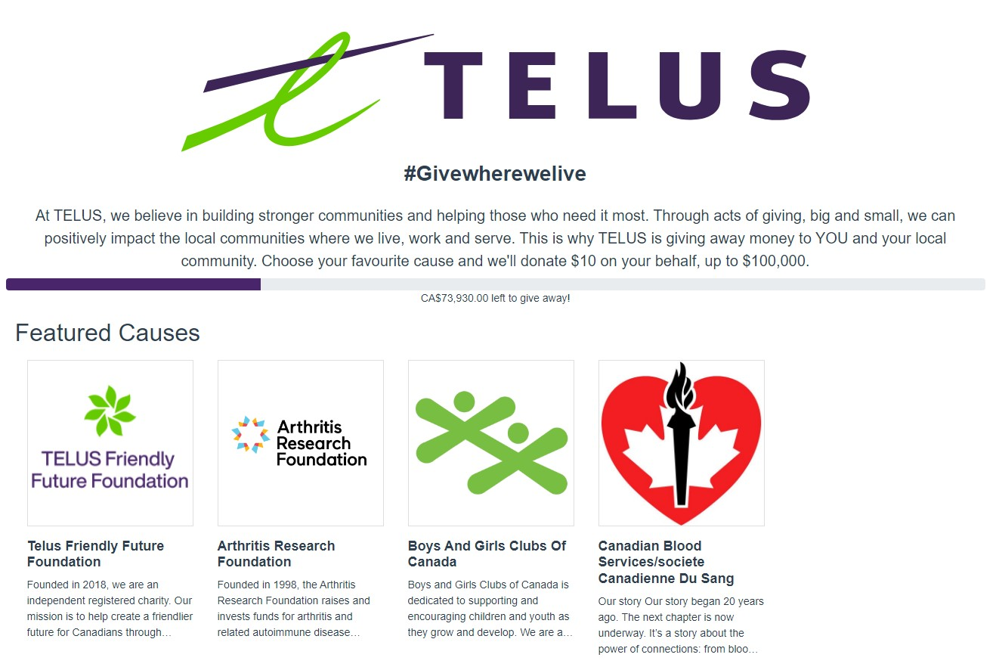

Awesome Projects I've been a part of
This simple a simple list of projects that I have done during my time at the University of Calgary. NOTE if you click on a demo or Github link, it will be impossible to come back to this page unless you use the back button. This is not covered by the "impossible to get stuck" since you are accessing an external site and will no longer be in this site. The demo links are there to be more realistic about the protfolio.
| Project name | Project Description | |
|---|---|---|
| Goodness giveaway | A current project that I am working on with my capstone group. It is a web application used by the public to decide what charities get a donation from a company or an individual. It is being built with Vue in the front-end and Spring in the back-end. I mainly work as a front-end and QA developer. This project allowed me to work with Vue.js for the first time and realize it's advantages comapared to React | Demo |
| Out to Lunch | A web application based social network where users can go and rate different restaurants. It was built using React on the front-end and DJango in the back-end. I learned how DJango worked and how to code in Python. | Github Repo |
| Stonks | A web application used to trade stocks (or Stonks). Again, DJango and React were used to create the application. | Github Repo |
Here is a picture of my latest project that I took part in:
